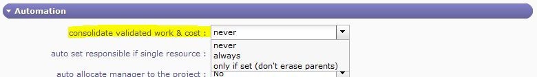

Common sections¶
Some sections are displayed on almost all screens in the detail area.
Those sections allows to set information or add information to an item of the element.

A view of ProjeQtOr’s global interface¶
Description section¶
This section allows to identify items of the element.
Information grouped under this section are:
Element type
Name
Description
Current situation
Stakeholder
Objective
Reference
Link
Treatment section¶
This section contains information about item treatment.
Depending on the element, this section may have a different name.
Information grouped under this section are:
Status and Dates
Link
Outcome
Comment
Allocations section¶

Allocation section¶
This section allows to manage resource allocation to projects.
Field |
Description |
|---|---|
Unique Id for the allocation. |
|
Resource |
Name of the allocated resource. |
Profile |
Selected profile. |
Start date |
Start date of allocation. |
End date |
End date of allocation. |
Rate |
Allocation rate for the project (%). |
Allocation list management
Click on
 to create a new allocation.
to create a new allocation.Click on
 to update an existing allocation.
to update an existing allocation.Click on to delete the corresponding allocation.
Click on to replace resource on the corresponding allocation. (See: Replace resource on an allocation)
The icon indicates that allocation to project is closed.
Note
Direct access to information
From project screen, click on the resource name to go directly to the selected resource.
From resource screen, click the project name to go directly to the selected project.

Allocation dialog box¶
Field |
Description |
|---|---|
|
Project list. |
|
Resource list. |
|
Profile list. |
Rate |
Rate (in %) of the allocation to the project. |
Start date |
Start date of allocation. |
End date |
End date of allocation. |
Description |
Complete description of the allocation. |
Closed |
Flag to indicate that allocation in not active anymore, without deleting it. |

Fields Project & Resource
If the allocation is done on the screen «Projects», the field «resource» will be selectable.
If the allocation is done on the screens «Resources», «Contacts» or «Users», the field «project» will be selectable.
Field Resource
This field can contain a list of users, resources or contacts according to which screen comes from project allocation.
Field Profile
The user profile defined will be displayed first.
Field Rate
100% means a full time allocation.
Note
Depending on which screen is used to manage project allocations, the behavior of fields will change.
Replace resource on an allocation
This feature allows to replace a resource by another.
All tasks assigned to old resource will be transferred to the new resource with assigned and left work.
Note
Work done on tasks still belongs the old resource.

Replace allocation dialog box¶
Field |
Description |
|---|---|
|
Resource list. |
Capacity (FTE) |
The capacity of the resource selected |
|
Profile list. |
|
Rate (in %) of the allocation to the project |
Start date |
Start date of allocation |
End date |
End date of allocation |
Field Profile
The user profile defined will be displayed first.
Field Rate
100% means a full time allocation.
Assignment section¶
This section allows to manage assignment of resources to tasks.
Note
Only resources allocated to a project can be assigned to its tasks.
Assignment function
The assignment function allows to define the resource function to task and the daily cost if defined.
Assignment rate
Assignment rate is used to keep some scheduling time for other tasks.
For instance, if rate is 50%, the resource will not be planned more than half days on the task.
Multiple assignment to a task
A resource can be assigned more than once to a task.
Allows to assign the resource to the same task, but with a different function (different daily cost).
Allows to add extra work without modifying initial assignment.
Incomplete planned work
The scheduling process tries to schedule, the remaining work on the assigned task within the allocation to project period.
The remaining work that can’t be planned is displayed on the right of the resource name.

Assignment section with incomplete planned work¶
Assignment list
Field |
Description |
|---|---|
Resource |
Name of the resource assigned to the task. |
Rate (%) |
Rate planned for this resource to the task. |
Assigned |
The work initially planned for this resource to the task. |
Real |
Sum of work done by this resource to the task. |
Left |
Remaining work to this resource to complete the task. |
Note
Click on the resource name to directly move to resource detail.
Assignment list buttons
Click on
to assign a new resource.Click on
to modify the assignment.Click on to delete the assignment.
Warning
If real work exists for an assignment, it can not be deleted.

Assignment dialog box¶
Field |
Description |
|---|---|
Resource |
Resource list. |
Function |
Function list. |
Cost |
Daily cost defined for the resource and its function. |
Rate |
The max rate (%) to schedule the resource on the task by day. |
Assigned work |
The work initially planned for this resource to the task. |
Real work |
Sum of work done by this resource to the task. |
Left work |
Remaining work to this resource to complete the task. |
Reassessed work |
The new total work planned to complete the task. |
Comments |
Any comment on the allocation. |
Field Function
The main function defined for the resource is the default function selected.
Field Left work
[Left work] = [Assigned Work] – [Real Work]
Project leaders can adjust this value to estimate the work needed to complete the task by the resource.
Field Reassessed work
[Reassessed work] = [Real Work] + [Left Work]
Field Comments
When a comment exists,  will appear on the assignment list, and on the description of the activity on the “real work allocation” screen.
will appear on the assignment list, and on the description of the activity on the “real work allocation” screen.
Moving the mouse over the icon will display the comment.
Progress section¶

Progress section¶
This section allows all at once, define planning and follow-up the progress.
All planning elements have a progress section.
Description of the different sections is grouped by the planning elements that have common fields and behavior.
Progress data are displayed in the same format, but according to the planning element, fields can have another meaning or behavior.
The following sections displayed first a general description of progress data.
Next, description of fields and information in sections will be displayed.
General description¶
Below is the definition of the different columns that make up the Progress section.
Column “Requested”
Requested dates allows to define initial dates (wished dates).
Useful to define preliminary dates in a project, in a change request or other.
Requested dates can be used:
as a first draft of planned dates.
with indicators to monitor the respect of start and end dates.
Column “Validated”
Validated data are used by project leader to define committed dates, work and cost expected.
Validated data can be used:
to fix a limit or a target and for some planning mode they are used to define parameter entries.
with indicators to monitor the respect of start and end dates, work and cost expected.
like the project’s baseline.
Note
Validated end date (due date)
The validated end date allows to fix a due date at which the work must be completed.
If the work is planned or completed beyond this limit, the error field will be highlighted.
For task and milestone, their Gantt element will be red. (See: Gantt chart view)
Column “Planned”
Planned dates are the estimated time to complete tasks or the estimated end date of milestones.
Planned dates are the estimated duration to complete tasks by resources according to assigned work.
Planned dates can be used to initialize validated and requested dates. (See: Project planning)
Column “Assigned”
This column displays the planned work and cost of resources and the planned project expenses.
Assigned work is the planned work assigned to resources for completing tasks
Planned work and cost of resources
Scheduled work time assigned to a resource for completing a task.
The estimated cost is the scheduled work time assigned to a resource for completing a task multiplied by its current daily cost.
Planned project expenses
Sum of the planned amount of all project expenses.
Column “Real”
This column displays the duration, completion date, work done and cost incurred by resources and the project expenses.
Dates
Allows to determine when a planning element has really begun and completed.
Work done and cost incurred by resources
Work done by a resource on an assigned task.
Work done are entered by resources, on a daily basis by real work allocation screen.
The cost incurred is the work done by a resource on a task on daily base multiplied by its daily cost defined for the period.
Project expenses
Sum of the real amount of all project expenses.
Column “Left”
This column displays the remaining of planned work and planned amount.
By default : Left = Assigned - Real
Left work should be re-estimated by the resource.
Work and cost remaining of resources
Scheduled work time assigned to resources for completing tasks minus the work done.
The remaining cost is the remaining work by a resource on a task multiplied by the latest daily cost defined for it.
Project expense
Sum of the planned amount of project expenses not incurred yet.
Column “Reassessed”
This column displays the resources work reassess and the spending projection.
Always calculated as [Reassessed] = [Real] + [Left]
Work and cost consolidation
Work and cost from tasks (Activity, Test session and Meeting) are summarized for each parent element.
Allows to follow-up progress on grouped tasks like phase, delivery, test group, sub-project and project.
Consolidate validated work and cost
Consolidation can be done on validated work and cost.
Allows to calculate the scheduled work and budgeted cost from lower planning elements.
The calculation depends on consolidation method selected and on which level the validated values are entered.
Consolidation method “Never”
Values are not consolidated.
Consolidation method “Always”
Values on the lower levels are consolidate up to project level.
Will overwrite existing values
Consolidation method “Only if set”
Zero values at lower levels do not overwrite values on upper level
non-zero values on the lower level are consolidated up to project level.
The parameter “Consolidated validated cost & work”¶
See also
For more details. See: Automation screen allows to select consolidation method.
Monitoring indicator
The indicators can be defined on the progress data.
Project, Activity and Test session.
Next indicators defined for Project, Activity and Test session
Respect of start or end date for the requested, validated and planned values
- These indicators can be programmed as a reminder and an alert,
according to the number of days or hours before the start or end date.
On resource work and cost
- These indicators can be programmed as a reminder and an alert,
according to percentage of progress on monitored value compared to the target value.
Reassessed cost compared to validated costThe reassessed cost compared to budgeted (validated) cost.
Reassessed cost compared to assigned costThe reassessed cost compared to cost calculated from assigned work for resources.
Reassessed work compared to validated workThe reassessed work compared to scheduled (validated) work.
Reassessed work compared to assigned workThe reassessed work compared to work assigned to resources.
Real work compared to validated workThe work really done by resources compared to scheduled (validated) work.
Real work compared to assigned workThe work really done by resources compared to work assigned to resources.
Milestone
Next indicators defined for Milestone.
Respect of end date for the requested, validated and planned values
These indicators can be programmed as a reminder and an alert, according to the number of days or hours before the end date.
Project, Activity & Test session¶
Next sections describe each part of progress section display.
Some parts are used only by a specific planning element.
Parts used by planning elements are:
Project
Activity
Test session
Dates and duration¶
Requested
Allows to define preliminary planned dates.
Validated
Validated dates are used to:
Define entry parameters according to selected planning mode.
Define initial planned dates, as a baseline.
Fix a due date at which the work must be completed.
Planned
Planned dates can be defined with:
Requested or validated dates
The planned dates can be initialized with validated dates or requested dates (whether validated dates are not specified).
Planning calculation
The planned dates can be determined during the planning calculation.
The planning calculation is done according to tasks assigned to resources and their predecessors.
Note
Planning mode “Fixed duration”
The planned dates of tasks will be calculated depending on their predecessors and their specified duration.
Warning
Planned dates of parent element
At parent element level, dates are adjusted with the first planned start date and the last planned end date from all sub-elements.
The planned start date is adjusted to the real start date when work began.
Real
The real start date is set when work began (handled).
The real end date is set when no more remaining work (done).
Real dates of parent element
The real start date will be propagated to parent elements up to project.
The real end date for parent element will be initialized, when all sub-element have been completed.
Resources (Work & Cost)¶
Work of resources are calculated by the work assigned to each resource for tasks.
Validated
Allows to define scheduled work and budgeted cost of resources.
Work
This value is used for calculation of the expected progress and project margin (work).
Cost
This value is used for calculation of project margin (cost).
Note
Project
The values of work and cost can be initialized with the sum of total work and amount of all project orders.
See: Incomes
Assigned
Sum of planned work assigned to resources and estimated cost.
Real
Sum of work done by resources and cost incurred.
Left
Sum of estimated remaining work to complete tasks and ensuing costs.
Left work should be re-evaluated by resource while entering the real work on real work allocation screen.
Left work can also be changed on assignment, at project management level.
Reassessed
Sum of resource total work that will be needed from start to end and the ensuing costs.
[Reassessed] = [Real] + [Left]
Work on tickets
Sum of work done on tickets and costs is included in work of activity linked through the “planning activity” of tickets.
Sum of work done on tickets that don’t link to any activity will be integrated in the work of the project.
Expense, Reserve and Total¶
This section is used by Project
Validated (Expense)
Allows to set the budgeted cost of project expenses.
This value is used for calculation of project margin (cost).
Assigned (Expense)
Project expenses planned.
Sum of “planned amount” for all expenses on project.
Real (Expense)
Project expenses committed.
Sum of “real amount” for all expenses on project.
Left (Expense)
Project expenses not committed yet.
Sum of “planned amount” for expenses for which “real amount” is not defined yet.
Reassessed (Expense)
Spending projections.
Sum of Real + Left
Left (Reserve)
Project reserve.
Note
Total columns
Total is the sum of resources cost, expenses and reserve of their corresponding column.
Progress, Expected, WBS & Priority¶
Progress
Percentage of actual progress.
Calculated by the sum of the work done divided by sum of work reassessed.
[Progress %] = [real work] / [reassessed work] = [real work] / ( [real work] + [left work] )
Expected
Percentage of expected progress.
Calculated by the sum of the work done divided by scheduled work.
[Expected %] = [real work] / [validated work]
WBS
Hierarchical position in the global planning.
Priority
Allows to define priority.
By default, the value is set to “500” (medium priority).
See: Scheduling priority.
Planning mode¶
Used by Activity & Test session
As soon as possible
The task is planned to finish as soon as possible.
Note
For tasks “as soon as possible”, if no assignment is created but the validated work is defined, take the validated work as the default duration (instead of 1 days)
Work together
When two or more resources are assigned to the same task, planning tries to find periods where all resources are available to work together.
Periods are searched “as soon as possible”.
If only one resource is assigned, this planning mode is exactly the same as “As soon as possible”.
If one resource is assigned more work than the other, the extra work is planned after working together periods.
Constraint by date
The validated start or end date field must be set.
Must not start before validated date
The task must not begin before a specific date.
As late as possible
The task is planned backward from end to start.
“Floating” backward planning is not possible, validated end date must be defined.
Recurrent activities
Allows to evenly distribute work between two dates.
Used for management recurrent activities.
The validated dates fields must be set.
Warning
Examples of the planning modes upcoming are based on 2 work days to plan on 10 days.
Regular between dates
Work will be evenly divided between on working days. For instance, 0.2 days during 10 days.
Regular in full days
Work will be distributed on full day between on working days.
Day |
1 |
2 |
3 |
4 |
5 |
6 |
7 |
8 |
9 |
10 |
|---|---|---|---|---|---|---|---|---|---|---|
Distribution |
0 |
0 |
0 |
0 |
1 |
0 |
0 |
0 |
0 |
1 |
Regular in half days
Work will be distributed on half of the day between on working days.
Day |
1 |
2 |
3 |
4 |
5 |
6 |
7 |
8 |
9 |
10 |
|---|---|---|---|---|---|---|---|---|---|---|
Distribution |
0 |
0 |
0.5 |
0 |
0.5 |
0 |
0 |
0.5 |
0 |
0.5 |
Regular in quarter days
Work will be distributed on one quarter of the day between on working days.
Day |
1 |
2 |
3 |
4 |
5 |
6 |
7 |
8 |
9 |
10 |
|---|---|---|---|---|---|---|---|---|---|---|
Distribution |
0 |
0.25 |
0.25 |
0.25 |
0.25 |
0 |
0.25 |
0.25 |
0.25 |
0.25 |
Recurring (on a weekly basis)
This new mode allows reserving availability on recurring tasks on a weekly basis, for example 1/2 day every Monday, 1h every day, …
Activities in this mode dynamically assign the work based on the start and end bounds:
start defined with a dependence End-Start or Start-Start
end defined with an end-end dependency. This is the first planning mode in ProjeQtOr that defines activities whose assigned work is not fixed, but adapts to the duration of the project.
Fixed duration
The task is planned by duration.
The task is “floating” depending on predecessors.
The validated duration field must be set.
It is not necessary to assign resources to the task.
If work is assigned to the task, planning behavior is the same as “Regular between dates” but with floating task.
Note
If you want fixed duration with fixed start, use “Regular between dates”, or use milestone to define start.
Margin¶
Used by Project.
Displays remaining margin.
Note
The percentage of remaining margins will be displayed on the right.
Margin (work)
Calculated by the scheduled work minus the sum of work reassessed.
[Margin] = [Validated work] - [Reassessed work]
[Margin (%)] = ([Validated work] - [Reassessed work]) / [Validated work]
Margin (cost)
Calculated by the budgeted cost (resource & expense) minus the total of reassessed cost.
[Margin] = [Validated cost] - [Reassessed cost]
[Margin (%)] = ([Validated cost] - [Reassessed cost]) / [Validated cost]
Ticket¶
Used by Activity.
Allows tracking of tickets attached to the activity throught the “planning activity” field of tickets.
Field |
Description |
|---|---|
Number |
Number of tickets attached to the activity. |
Estimated |
Sum of estimated work for tickets attached to the activity. |
Real |
Sum of work done for tickets attached to the activity. |
Left |
Sum of remaining work for tickets attached to the activity. |
Field Estimated
This field will be highlighted when the sum of estimated work on the tickets is higher than the planned work on the activity.
Field Left
This field will be highlighted when the sum of remaining work on the tickets is higher than the remaining planned work on the activity.
Show tickets attached
Click on
 to show ticket list attached to the activity.
to show ticket list attached to the activity.Click on a ticket name to directly move to it.

Milestone¶
This section allows to define planning and follow progress on a milestone.
Requested
Allows to define the initial due date for the milestone.
Have no impact on planning.
Validated
Allows to define the due date at which the milestone must be completed.
Planned
Defined according to the selected planning mode.
Fixed milestone
Planned due date is the value from validated due date field.
The milestone will not move, and may have successors.
Floating milestone
Calculation of planned due date takes into account dependencies with tasks.
The milestone will move depending on predecessors.
Real
Determined when the status of the milestone is “done”.
WBS
Hierarchical position of the milestone in the global planning.
Planning mode
Fixed milestone
Floating milestone
Note
A milestone has no duration, so there are no start and end dates for a milestone, just a single date.
Meeting¶
This section allows to define priority and follow progress on a meeting.
Validated
Allows to define scheduled work and budgeted cost.
Used to consolidate validated work and cost to the project.
Assigned
Sum of planned work assigned to attendees and the planned cost.
Real
Sum of work done by attendees and the cost.
Left
Sum of planned work remaining and the remaining amount.
Priority
Allows to define meeting priority.
By default, the value is set to “1” (highest priority).
See: Scheduling priority.
Predecessor and Sucessor element sections¶
This section allows to manage dependency links between planning elements.
A dependency can be created from the predecessor and/or successor planning element.
The dependency link can be created in the Gantt chart.
Click on the name of a predecessor or successor to go directly to the element.
See also

Predecessor and Successor section¶
Field |
Description |
|---|---|
Element |
Type and id of the element. |
Name |
Name of the element. |
Status |
Actual status of the element |
End Date |
End date of the selected item |
Predecessors and successors elements list management
Click on
on the corresponding section to add a dependency link.Click on
to edit the dependency link.Click on to delete the corresponding dependency link.

Dialog box - Predecessor or Successor element¶
In the NAME field, icons are displayed to indicate the type of dependencies
 End End dependency
End End dependency
 End start dependency
End start dependency
End End dependency
Note
Recursive loops are controlled on saving.
Linked element list of values
By default, the list of values shows items of the same project.
But, it is possible to link items from different projects.
Click on to get the list of elements of all projects.
Multi-value selection
Multi-line selection is possible using Control key while clicking.
Delay (late)
Days between predecessor end and successor start.

highlighting the date¶
Highlighting the date that will most constrain the next activity
Linked Elements section¶
This section allows to manage link between items of elements.
Used for
Allows to associate items on different elements in the same project.
A project can be linked with other.
Note
Access to an item
Click on an item name to directly move to it.
Click on  to return to the last screen.
to return to the last screen.
More detail, see: Top bar
Reciprocally interrelated
If Item A is linked to Item B, Item B is automatically linked to Item A.
Note
A link between items has no impact on them treatment.
Linked elements list
Field |
Description |
|---|---|
Element |
Type and id of the linked element. |
Name |
Name of the linked element. |
Date |
Date of creation of the link. |
User |
User who created the link. |
Status |
Actual status of the linked element. |
Linked elements list buttons
Click on
to create a new link.Click on to delete the corresponding link.

Add a link with element¶
Linked element list of values
By default, the list of values shows items of the same project. But, it is possible to link items from different projects.
Click on to get the list of elements of all projects.
Link with Document
When a link to a document is selected. The document version can be selected. (See options below) Linked documents are available directly in linked elements list.
Specified version
A link with a document element offer the possibility to select a specific version.
A direct link to version of the document is created.
Not specified version
If the version is not specified, the last version will be selected.
The download will transfer always the last version of the document.
Attachments section¶
This section allows to attach files or hyperlinks to items of elements.
Document viewer available
image
text
PDF
Hyperlinks
Attachment section¶
Note
If you do not fill in the description then the exact name of the document will be displayed
see the ID#9 document in the table.
If the desciption field is filled then this text will be displayed
see the ID#11 document in the table
Field |
Description |
|---|---|
Unique Id for the attachment. |
|
File |
File name or hyperlink. |
Date |
Date of creation of the attachment. |
User |
User who created the attachment. |
the attachment
Select an attachment depends on whether is a file or a hyperlink.
Click on
Click on to delete an attachment.
Click on
to add hyperlink to an item.
Click on
to download attachment file.
Click on
To upload a file
Select file with “Browse” button or drop the file in “drop files here” area.
Attached files are stored on server side.
Attachments directory is defined in Global parameters screen.

Attachment for file¶

Field |
Description |
|---|---|
Description |
Description of attachment. |
Public |
Attachment is visible to anyone. |
Team |
Attachment is visible to every member of the creator’s team. |
Private |
Attachment is visible only to the creator. |
Notes section¶
This section allows to add notes on items of elements.
Notes are comments, that can be shared to track some information or progress.
Predefined note
The list of values appears whether a predefined note exists for an element or an element type.
Selecting a predefined note will automatically fill in the note text field.
Predefined notes are defined in Predefined notes screen.
Note visibility
Public: Visible to anyone.
Team: Visible to every member of the creator’s team.
Private: Visible only to the creator.
Notes list
Field |
Description |
|---|---|
Unique Id for the note. |
|
Note |
Text of the note. |
Date |
Date of creation or modification of the note. |
User |
Name of the user who created the note. |
Notes list buttons
Click on
to add a note to an item.Click on
to edit the note.Click on to delete the note.
dialog box notes¶